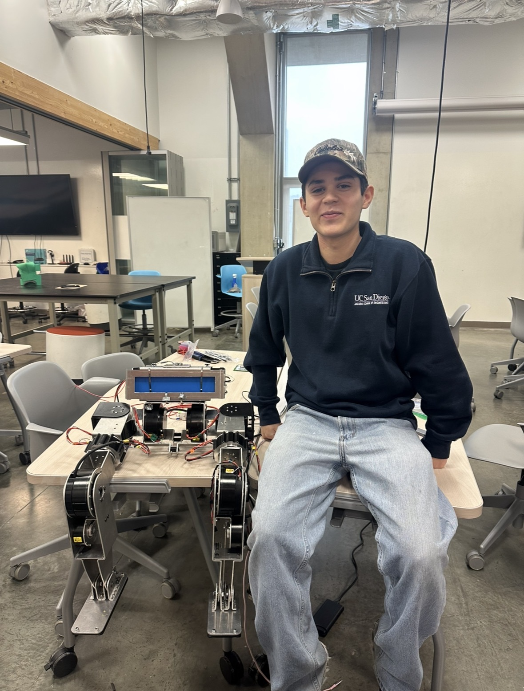

Electrical Engineering · Machine Learning & Controls · UC San Diego
Hi, I'm Gustavo, an Electrical Engineering undergraduate at UC San Diego specializing in Machine Learning and Controls. I'm passionate about robotics, autonomous systems, and making machines that can perceive, reason, and act in the physical world.
As a Robotics Software Engineer and Incoming Vice President of Engineering at Triton Droids, UCSD's humanoid robotics club, my work spans vision-language-action models, reinforcement learning, and sim-to-real transfer for bipedal locomotion.
In my free time I enjoy staying active through sports like basketball, football, and tennis. I also love reading about the development of jazz music, during the era of people like Louis Armstrong and Malcolm X.
I'm actively looking for research and industry opportunities in the robotics space.
Skills & Tools
Collected demonstration dataset via teleoperation on so101 arms with multiple camera angles, covering the full coffee-making sequence. Trained a π0.5 flow matching policy using LeRobot, experimenting with quantile and mean-std normalization to improve action prediction quality.
Trained smolVLA, ACT, and π0.5 on so101 robotic arms with hours of teleoperation data to finetune and compare models for cube stacking. Ran training on H100 GPUs through VESSL AI, Google Colab, and SDCC, uploading checkpoints to HuggingFace for reproducibility.
Built a GPU-accelerated RL environment for a robot arm in MuJoCo MJX and Brax, running 2048 parallelized rollouts in JAX. Designed multi-phase shaped rewards with tanh distance shaping and velocity-based stillness penalties. Trained PPO to 160M+ environment steps, tracked via Weights & Biases.
Trained an EngineAI T800 humanoid to throw a punch using PPO with mocap imitation in MJLab. Built a whole-body motion tracking pipeline from BVH mocap data, with multi-component exponential reward shaping over 14 tracked body segments and adaptive curriculum sampling.
In ProgressApplying Physical Intelligence's pi0.6 RECAP offline RL framework on top of a smolVLA base model for simulated robotic manipulation in MuJoCo. Combines offline RL fine-tuning with vision-language-action pretraining to improve sample efficiency and task performance without online interaction.
In ProgressMy experience working with state of the art vision-language-action models, managing open source code bases and compute limits.
Lessons from my experience of owning a 3D printer.
My take after a semester trying to make MuJoCo locomotion policies work on real hardware.